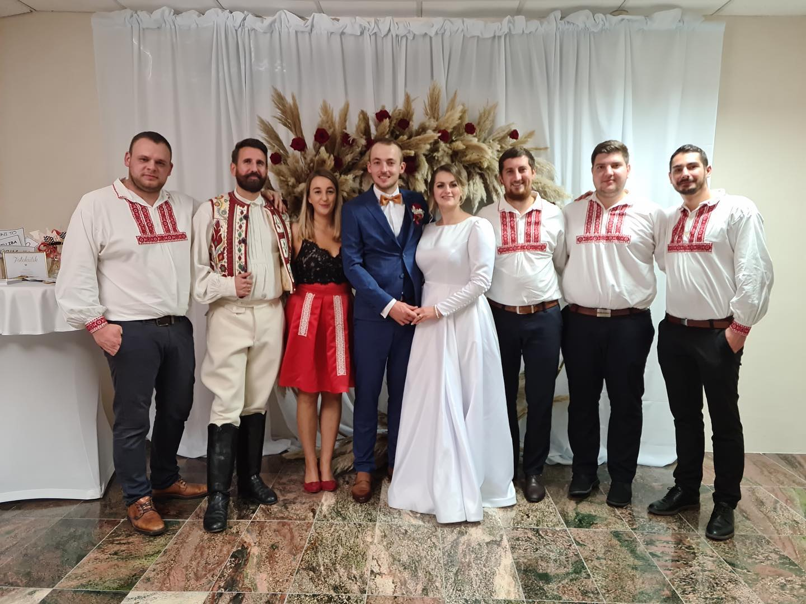
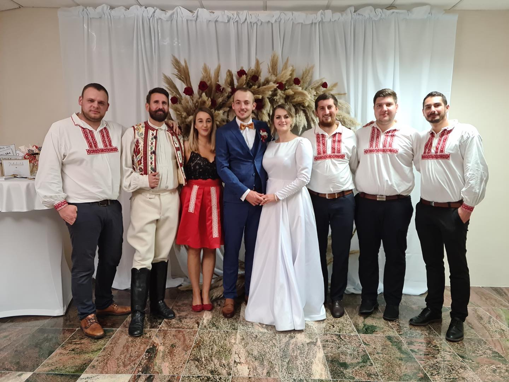

Ľudová hudba Tomáša Boráka
Oslavy, svadby, krstenia, plesy, zábavy, životné jubileá, odobierky, recepcie, firemné večierky, rauty a iné.
O nás
Vznikli sme v roku 2013, na pôde cvičísk FS Detva ako skupina mladých nadšencov slovenského folklóru. Venujeme sa interpretácii tradičnej ľudovej hudby z rôznych regiónov Slovenska, predovšetkým z detvianskej oblasti, pričom náš repertoár postupne obohacujeme aj o iné hudobné žánre v rôznych úpravách. Skúsenosti sme získavali už od detstva v súboroch Ratolesť a Hviezdička a neskôr vo folklórnych súboroch Detva, Podpoľanec, Hriňovčan a Urpín, s ktorými sme účinkovali doma aj v zahraničí. Viacerí z nás sú dnes aktívnymi členmi hudobnej zložky FS Detva a FS Podpoľanec. Ako kolektív však najradšej prinášame radosť na svadbách, rodinných oslavách a kultúrnych podujatiach.

Tomáš Borák
Husle
Martin Smutný
Husle
Lenka Václavíková
Cimbal
Ján Budáč
Basa
Roman Lapín
Akordeón
Referencie
Spätná väzba od Vás je pre nás tou najväčšou odmenou.
Rezervujte si nás na Vaše podujatie
Ponuku je možné ľubovoľne prispôsobiť Vašim požiadavkám a potrebám. Základom je pre nás úsmev, dobrá nálada a Vaša spokojnosť!
Galéria


 
